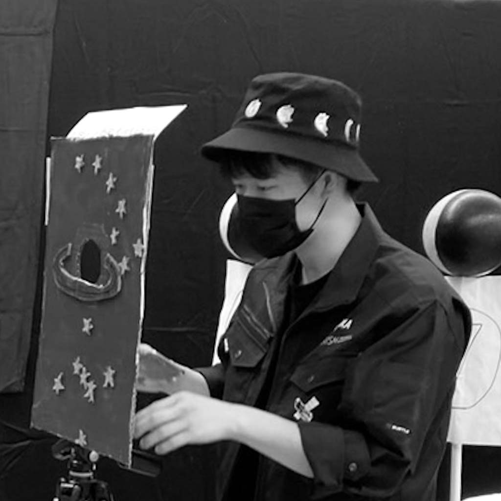

Yuma Aoki's Portfolio
Home
研究成果
自己紹介
天体写真
Contact

青木悠馬（Yuma Aoki）
所属 : 近畿大学大学院 総合理工学研究科 理学専攻
出身地 : 大阪府堺市
趣味 : 天体観測, 写真撮影, 他
推し天体
アンドロメダ座ガンマ星
かみのけ座24番星
プレアデス星団（すばる）
Melotte20
他多数
資格
基本情報技術者
第3級アマチュア無線技士
星空宇宙天文検定 1級
天文宇宙検定 準1級
他
学歴
2024.04
近畿大学大学院 総合理工学研究科 理学専攻 博士後期課程 入学（在学中, D1）
2024.03
近畿大学大学院 総合理工学研究科 理学専攻 博士前期課程 修了
修士論文題目『
XRISM搭載CCD検出器におけるイベントパターンの違いによる波高値差の原因究明とその補正
』
2022.03
近畿大学 理工学部 理学科 卒業
卒業論文題目『
X線分光撮像衛星XRISM搭載CCD素子におけるGoffsetのシミュレーション
』
受賞
2024.03
近畿大学大学院部長賞 総代（近畿大学大学院総合理工学研究科）
近畿大学の公式Instagramにしれっと写り込んでいます。投稿は
こちら
。
2023.06
OUTSTANDING CONTRIBUTION AWARD for students（JAXA/XRISMチーム）
近畿大学理工学部のホームページに掲載されました。詳細は
こちら
。
2023.02
近畿大学大学院 総合理工マスターズ 2023 優秀ポスター賞
2022.10
OUTSTANDING CONTRIBUTION AWARD for groups（JAXA/XRISMチーム）
2022.08
2022年度第52回天文・天体物理若手夏の学校 観測機器分科会 オーラルアワード 3位（2022年度天文・天体物理若手夏の学校事務局）
所属研究室
高エネルギー天体物理学研究室（
信川研
）
素粒子実験研究室（
加藤研
）
所属学会/研究会
日本天文学会
高エネルギー宇宙物理連絡会